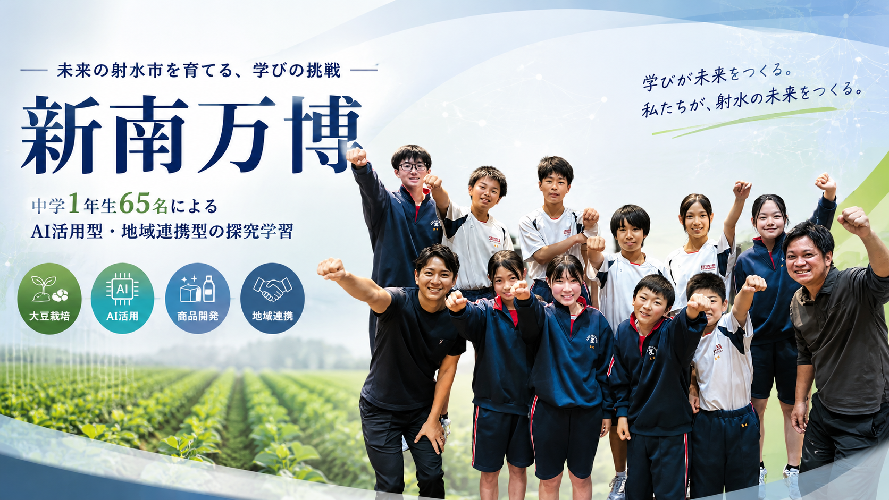

令和7年度 / 2025
スプラウトプロジェクト
「キング豆苗」
規格外スプラウトの課題に向き合い、 キャラクターづくりから商品化、販売体験までつなげた取り組みです。
- 規格外品の価値転換
- キャラクター制作
- 販売体験

Project Overview
新湊南部中学校の探究学習を、年度ごとの取り組みに分けて紹介しています。
Choose a Year
令和7年度 / 2025
規格外スプラウトの課題に向き合い、 キャラクターづくりから商品化、販売体験までつなげた取り組みです。
令和8年度 / 2026
1年生65名が、地域と連携しながら 大豆の栽培から商品開発、発信まで挑戦するプロジェクトです。